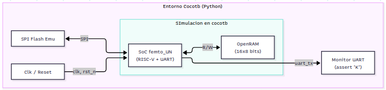
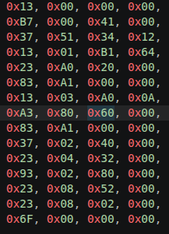
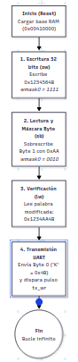
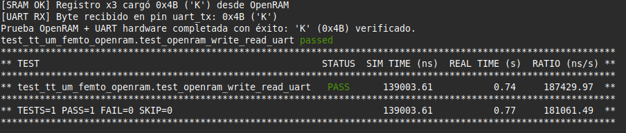
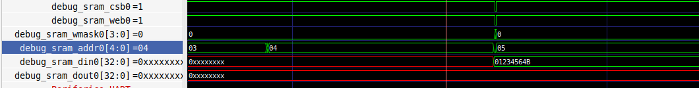
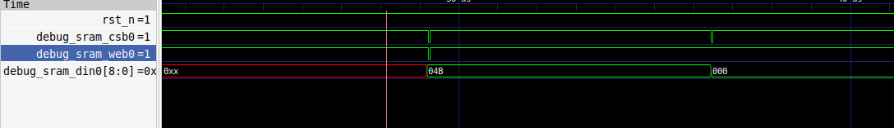
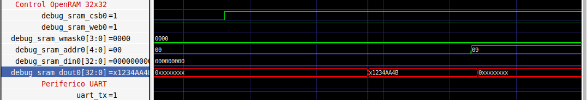
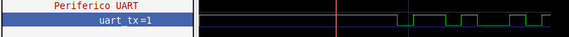

Simulación
SIMULACION
Esta simulación verifica que la memoria OpenRAM funcione correctamente integrada con el procesador RISC-V y el puerto serie (UART) del sistema. Para lograrlo, el entorno de prueba emula una memoria Flash externa que le entrega al procesador un programa de verificación; al ejecutarse, el procesador escribe el carácter 'K' (0x4B) en la memoria OpenRAM, lo lee de vuelta para comprobar que el dato se almacenó sin errores y finalmente lo envía hacia el exterior por el pin de transmisión UART.
Funcionamiento del Testbench en Cocotb
La verificación funcional se implementa en Python mediante Cocotb (test_tt_um_femto_openram.py) sobre el wrapper tt_um_femto_cocotb. A diferencia de un testbench tradicional en Verilog, Cocotb permite coordinar tareas concurrentes (corutinas) que interactúan con los pines del SoC en tiempo real.
El flujo de ejecución del código de prueba se divide en cuatro etapas:
- Generación de reloj y secuencia de reset: Cocotb instancia un generador de reloj (
Clock) sobre la entradaclk, habilita el bloque de Tiny Tapeout (ena = 1) y mantienerst_n = 0durante los ciclos iniciales para llevar los registros internos y la máquina de estados a un estado conocido antes de liberar el procesador. - Emulación concurrente de la SPI Flash: Como el núcleo FemtoRV32 arranca leyendo instrucciones desde una memoria externa, el script lanza una corutina en segundo plano (
cocotb.start_soon) que escucha el bus SPI (CS_n,SCK,MOSI). Al detectar el comando de lectura (0x03) y la dirección de memoria, Python inyecta bit a bit porMISOel arreglo hexadecimal del programa de prueba. - Interacción con la OpenRAM y periféricos: Conforme el procesador ejecuta las instrucciones entregadas por la Flash emulada, escribe el carácter
'K'(0x4B) en la dirección base de la memoria interna (0x00410000), lo lee de vuelta al registrox3y ordena su envío por el periférico UART (0x00400000). - Decodificador UART y validación automática (
assert): En paralelo, una segunda corutina monitorea el pin de transmisión serie (uart_tx). Al detectar el flanco de bajada del bit de inicio (start bit), muestrea los 8 bits siguientes a la tasa de baudios configurada, reconstruye el byte recibido y ejecuta una comprobación automática (assert) verificando que el dato transmitido sea exactamente'K'(0x4B).

Ver código del Testbench Cocotb (test_tt_um_femto_openram.py)
import cocotb
from cocotb.clock import Clock
from cocotb.triggers import ClockCycles, FallingEdge, First, RisingEdge
# Escribe 'K' (0x4B) en OpenRAM (0x00410000), lo lee en x3 y lo transmite por UART hardware
OPENRAM_PROGRAM = bytes([
0x13, 0x00, 0x00, 0x00, # 0x00: nop
0xB7, 0x00, 0x41, 0x00, # 0x04: lui x1, 0x00410 (x1 = 0x00410000 Base OpenRAM)
0x13, 0x01, 0xB0, 0x04, # 0x08: li x2, 0x4B (x2 = 'K')
0x23, 0x80, 0x20, 0x00, # 0x0C: sb x2, 0(x1) (Escribe 'K' en OpenRAM[0])
0x83, 0x81, 0x00, 0x00, # 0x10: lb x3, 0(x1) (Lee de vuelta OpenRAM[0] -> x3)
0x37, 0x02, 0x40, 0x00, # 0x14: lui x4, 0x00400 (x4 = 0x00400000 Base UART)
0x23, 0x04, 0x32, 0x00, # 0x18: sb x3, 8(x4) (Carga 'K' en d_in_uart [0x00400008])
0x93, 0x02, 0x80, 0x00, # 0x1C: li x5, 0x08 (Bit 3 = tx_wr)
0x23, 0x08, 0x52, 0x00, # 0x20: sb x5, 16(x4) (Activa tx_wr = 1 en uart_ctrl [0x00400010])
0x23, 0x08, 0x02, 0x00, # 0x24: sb x0, 16(x4) (Limpia tx_wr = 0 en uart_ctrl [0x00400010])
0x6F, 0x00, 0x00, 0x00, # 0x28: jal x0, 0 (loop: j loop)
])
class SpiFlash:
def __init__(self, dut, contents):
self.dut = dut
self.contents = contents
self.reads = []
def read_byte(self, address):
if address < len(self.contents):
return self.contents[address]
return 0
async def run(self):
self.dut.flash_miso.value = 0
while True:
await FallingEdge(self.dut.flash_cs_n)
request = 0
for _ in range(32):
await RisingEdge(self.dut.flash_clk)
request = (request << 1) | int(self.dut.flash_mosi.value)
command = (request >> 24) & 0xFF
address = request & 0xFFFFFF
assert command == 0x03, f"Comando SPI inesperado: 0x{command:02x}"
self.reads.append((command, address))
while not int(self.dut.flash_cs_n.value):
value = self.read_byte(address)
address += 1
for bit in range(7, -1, -1):
await First(
FallingEdge(self.dut.flash_clk),
RisingEdge(self.dut.flash_cs_n),
)
if int(self.dut.flash_cs_n.value):
self.dut.flash_miso.value = 0
break
self.dut.flash_miso.value = (value >> bit) & 1
else:
continue
break
async def uart_rx_monitor(dut, received_bytes, clks_per_bit=208):
"""Decodifica tramas UART 8N1 en dut.uart_tx (27 MHz / 115200 baud = 234 ciclos/bit)."""
while True:
await FallingEdge(dut.uart_tx)
await ClockCycles(dut.clk, clks_per_bit // 2)
if int(dut.uart_tx.value) != 0:
continue
byte_val = 0
for bit_idx in range(8):
await ClockCycles(dut.clk, clks_per_bit)
byte_val |= (int(dut.uart_tx.value) & 1) << bit_idx
await ClockCycles(dut.clk, clks_per_bit)
received_bytes.append(byte_val)
char_repr = chr(byte_val) if 32 <= byte_val < 127 else f"\\x{byte_val:02x}"
dut._log.info(f"[UART RX] Byte recibido en pin uart_tx: 0x{byte_val:02X} ('{char_repr}')")
@cocotb.test()
async def test_openram_write_read_uart(dut):
"""Escribe 'K' (0x4B) en OpenRAM (0x00410000), lo lee en x3 y lo transmite por UART."""
dut.rst_n.value = 0
dut.uart_rx.value = 1
dut.ram_miso.value = 0
dut.flash_miso.value = 0
clock = Clock(dut.clk, 37038, unit="ps") # ~27 MHz
cocotb.start_soon(clock.start())
flash = SpiFlash(dut, OPENRAM_PROGRAM)
cocotb.start_soon(flash.run())
uart_bytes = []
cocotb.start_soon(uart_rx_monitor(dut, uart_bytes))
await ClockCycles(dut.clk, 8)
dut.rst_n.value = 1
sram_read_verified = False
for _ in range(20000):
await RisingEdge(dut.clk)
if not sram_read_verified:
try:
if int(dut.dut.femto0.CPU.registerFile[3].value) == 0x4B:
sram_read_verified = True
dut._log.info("[SRAM OK] Registro x3 cargó 0x4B ('K') desde OpenRAM")
except Exception:
pass
if len(uart_bytes) >= 1:
break
else:
raise AssertionError(
f"Timeout esperando UART; bytes recibidos={uart_bytes}, "
f"PC=0x{int(dut.debug_pc.value):06x}"
)
assert sram_read_verified, "El registro x3 nunca recibió 0x4B ('K') desde OpenRAM"
assert uart_bytes[0] == 0x4B, (
f"Se esperaba 'K' (0x4B) por UART, se recibió: {uart_bytes}"
)
dut._log.info("Prueba OpenRAM + UART hardware completada con éxito: 'K' (0x4B) verificado.")
Codigo ensamblador
_start:
nop # Espera inicial tras reset
# 1. Escritura y lectura en OpenRAM (0x00410000)
lui x1, 0x00410 # x1 = 0x00410000 (Base OpenRAM)
li x2, 0x4B # x2 = 'K'
sb x2, 0(x1) # OpenRAM[0] = 'K'
lb x3, 0(x1) # x3 = OpenRAM[0]
# 2. Transmisión del dato por UART (0x00400000)
lui x4, 0x00400 # x4 = 0x00400000 (Base UART)
sb x3, 8(x4) # Cargar 'K' en registro de datos TX
li x5, 0x08 # Máscara bit 3 (tx_wr)
sb x5, 16(x4) # Iniciar transmisión (tx_wr = 1)
sb x0, 16(x4) # Limpiar pulso (tx_wr = 0)
loop:
jal x0, 0 # Detener ejecución
Ver tabla hexadecimal del firmware
| Dirección | Bytes Hex (Little-Endian) | Instrucción RISC-V | Operación |
|---|---|---|---|
0x00 |
0x13, 0x00, 0x00, 0x00 |
nop |
Espera inicial tras reset |
0x04 |
0xB7, 0x00, 0x41, 0x00 |
lui x1, 0x00410 |
x1 = 0x00410000 (Base OpenRAM) |
0x08 |
0x13, 0x01, 0xB0, 0x04 |
li x2, 0x4B |
x2 = 0x4B ('K') |
0x0C |
0x23, 0x80, 0x20, 0x00 |
sb x2, 0(x1) |
Escribe 'K' en OpenRAM[0] |
0x10 |
0x83, 0x81, 0x00, 0x00 |
lb x3, 0(x1) |
Lee OpenRAM[0] hacia x3 |
0x14 |
0x37, 0x02, 0x40, 0x00 |
lui x4, 0x00400 |
x4 = 0x00400000 (Base UART) |
0x18 |
0x23, 0x04, 0x32, 0x00 |
sb x3, 8(x4) |
Carga 'K' en d_in_uart (0x00400008) |
0x1C |
0x93, 0x02, 0x80, 0x00 |
li x5, 0x08 |
x5 = 0x08 (Bit 3 = tx_wr) |
0x20 |
0x23, 0x08, 0x52, 0x00 |
sb x5, 16(x4) |
Activa tx_wr = 1 en uart_ctrl |
0x24 |
0x23, 0x08, 0x02, 0x00 |
sb x0, 16(x4) |
Limpia tx_wr = 0 en uart_ctrl |
0x28 |
0x6F, 0x00, 0x00, 0x00 |
jal x0, 0 |
Bucle infinito (loop: j loop) |
Ver Codigo

Ver diagrama de flujo

Resultado de la Simulación
Al ejecutar la simulacion da el siguiente resultado:

Verificacion Grafica de la simulacion.
-
Ejecución completa: Verificar que
debug_pc[23:0]inicia en000000y se detiene en000028.
-
Escritura en OpenRAM: Verificar en
29.2 µsquecsb0 = 0,web0 = 0,addr0 = 0ydin0 = 04B.
-
Lectura desde OpenRAM: Verificar en
36.4 µsqueweb0 = 1,dout0 = X4Bydebug_x3_dato_rd = 0000004B.
-
Transmisión UART: Verificar entre
43 µsy139 µsel envío serie del carácter'K'(0x4B) poruart_tx.